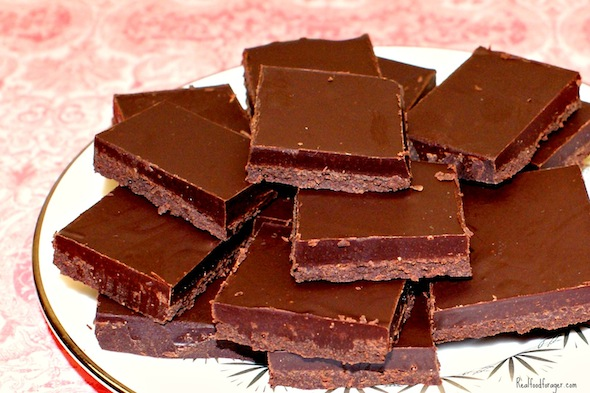

MAKES: 8 servings
COOK TIME: 15 minutes
INGREDIENT:
1/2 cup cocoa powder,
1/4 cup coconut oil(room temperature),
1/4 cup maple syrup,
pinch sea salt
RECIPE SOURCE:
http://allrecipes.com/recipe/24610/onion-rings/?internalSource=recipe%20hub&referringId=17484
&referringContentType=recipe%20hub&clickId
=cardslot%2050;

PREP TIME: 10 min;
COOK TIME: 10 min;
INGREDIENT:
1 quart oil for frying,
1 cup dry pancake mix,
1 large Spanish onion,
sliced into ring;
RECIPE SOURCE:
http://allrecipes.com/recipe/24610/onion-rings
/?internalSource=recipe%20hub&referringId=17484
&referringContentType=recipe%20hub&clickId
=cardslot%2050

MAKES: 8 servings
COOK TIME: 15 minutes
INGREDIENT:
1/2 cup cocoa powder,
1/4 cup coconut oil(room temperature),
1/4 cup maple syrup, pinch sea salt
RECIPE BY:
Jamie Webber
RECIPE SOURCE:
http://greatist.com/eat/homemade-chocolate-recipe-video